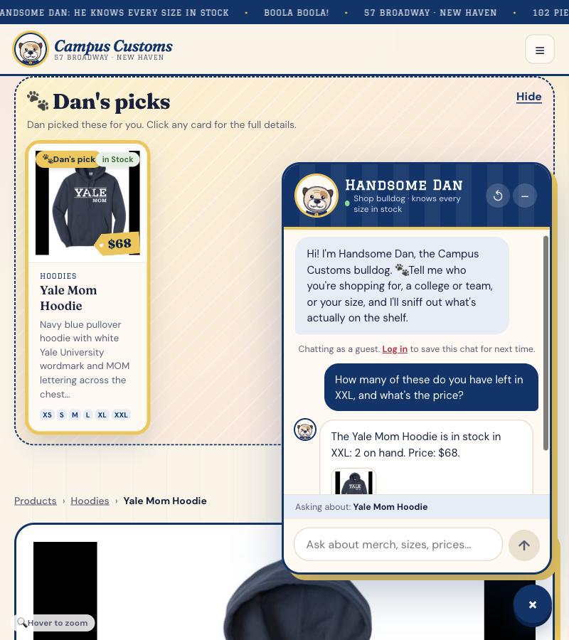
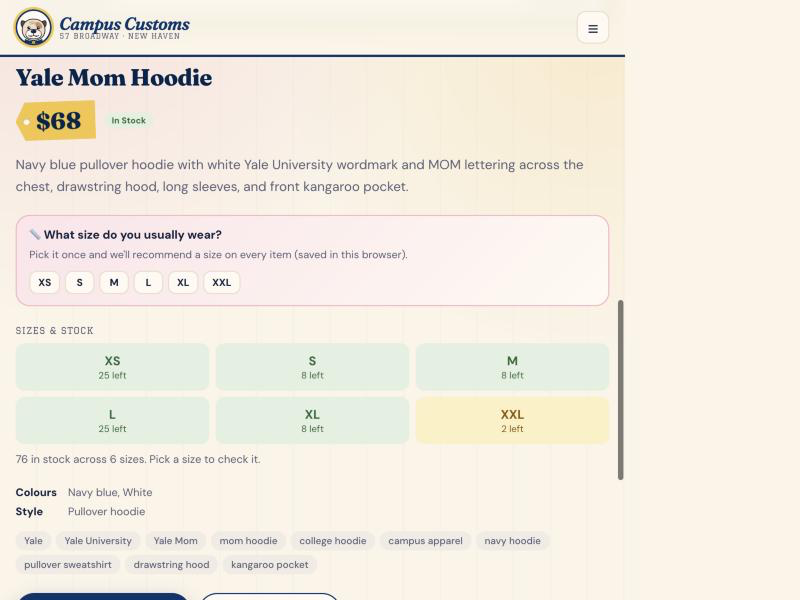
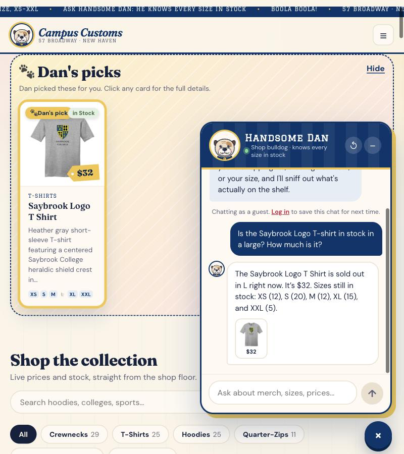
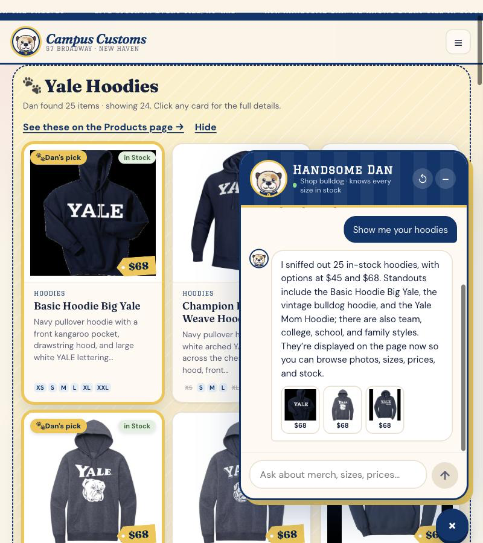
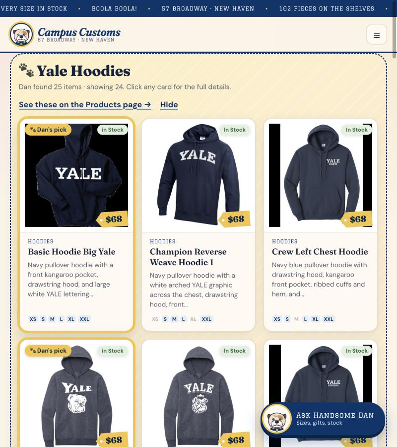
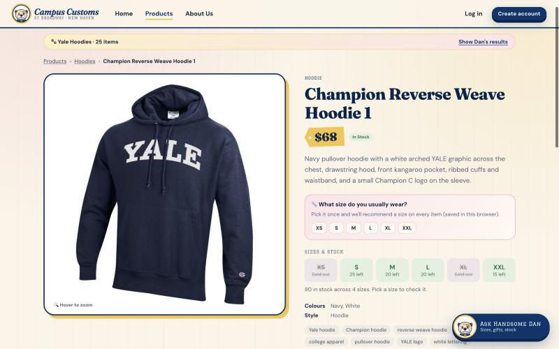
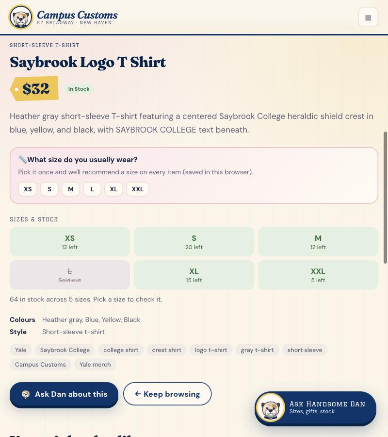
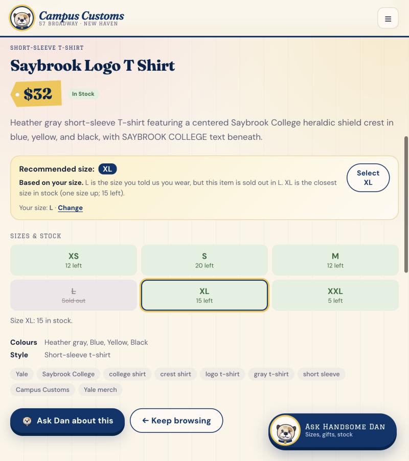
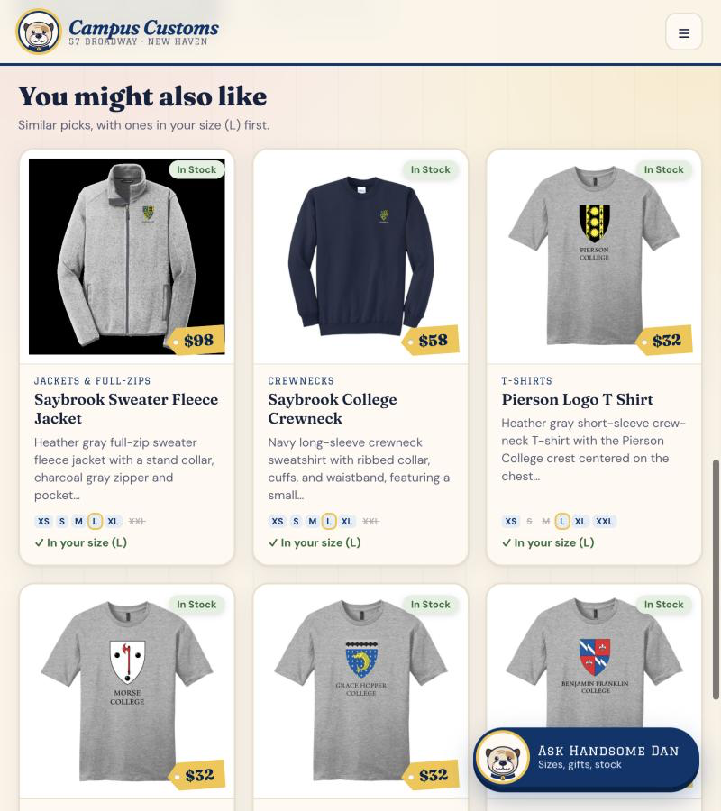

Click any screenshot to open it full size. Images are in app_check_images/.
Check 1 — Chat checks inventory (honest stock & price)
Steps: (a) on the Yale Mom Hoodie page, asked Dan
How many of these do you have left in XXL, and what's the price?
(b) on the Products page, asked Is the Saybrook Logo T-shirt in stock in a large? How much is it?
What this proves: Dan answers stock and price questions with the exact numbers in the database ("2 on hand", "$68"). He also states plainly when a size is sold out (Saybrook tee in L = 0) and lists the real counts for the other sizes. Nothing is invented.






Database values at test time (catalogue + inventory)
| Product | Price | XS | S | M | L | XL | XXL |
|---|---|---|---|---|---|---|---|
| Yale Mom Hoodie | $68 | 25 | 8 | 8 | 25 | 8 | 2 |
| Saybrook Logo T Shirt | $32 | 12 | 20 | 12 | 0 | 15 | 5 |
Highlighted cells are the values Dan quoted. Every number in screenshots 1a–1c matches this table.
Check 2 — Dynamic search-result cards after a category question
Steps: on the Home page, asked Dan Show me your hoodies, then clicked one of the cards that appeared.
What this proves: a category question makes Dan search the catalogue, and the site then shows the matching items as product cards (image, name, price, short info, sizes) without a page reload. The cards come from the database: 25 hoodies matched, and 24 are shown, as labelled. Each card still opens the full product page.






Database check
| Hoodies in catalogue | In stock | Priced $68 | Priced $45 |
|---|---|---|---|
| 25 | 25 | 23 | 2 |
Matches Dan's reply ("25 in-stock hoodies, with options at $45 and $68") and the "Dan found 25 items" count.
Check 3 — Usability feature (Problem 9): Recommended size
Steps: as a guest with no size set, opened the Saybrook Logo T Shirt page (sold out in L), then picked
L in "What size do you usually wear?".
What this proves: the product page recommends a size from the size the shopper says is theirs, adjusted for this item's stock. L is sold out, so it explains that and recommends XL (the nearest size in stock, 15 left), pre-selecting it. The shopper doesn't have to read every size box to find one that's available.





